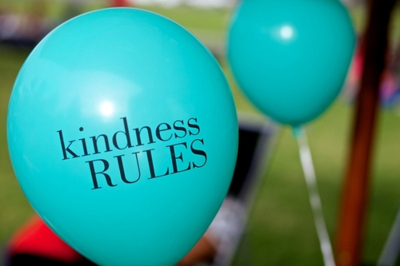

Sometimes I prevent myself from doing something kind for someone else with the thought "I am being too nice, this is weird."
I've decided that whenever I get to that question "Is doing x nice or weird?" to err on the side of being too nice. Based on the notion that I would rather be a little too nice and it be weird, then be slightly rude.
To be short: Kindness Rules. Pass it on.
